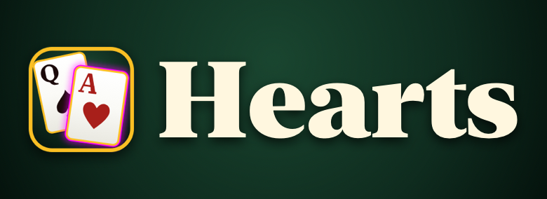
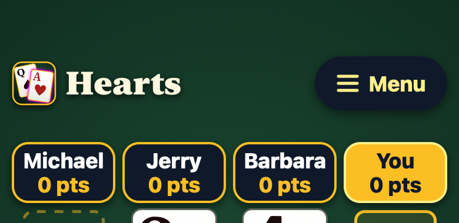
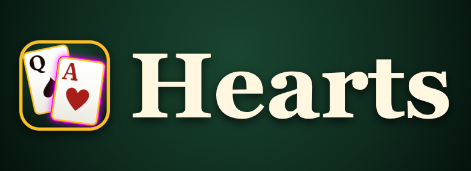
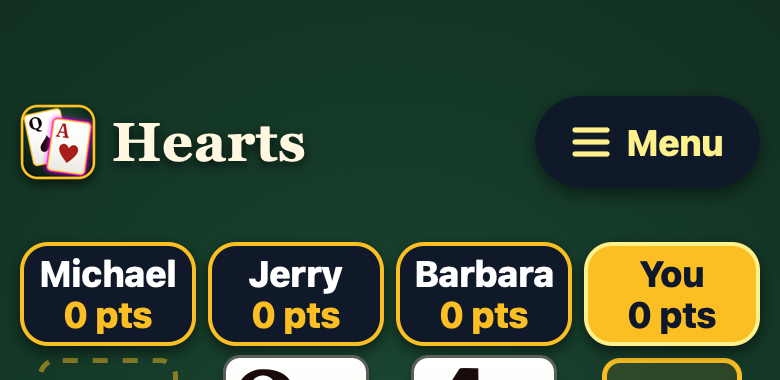
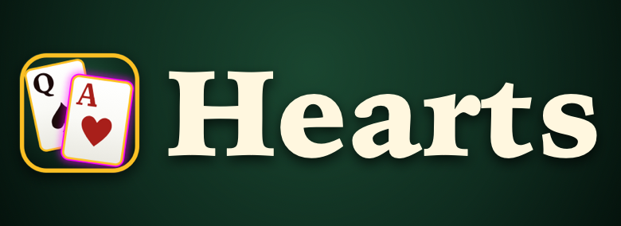

English
The title next to the logo, drawn as shapes like the card faces, so it looks the same on every phone and needs no font installed. Your pick (Sept 25): Fraunces Black, soft. Live now. Only the title uses it.
Screen readers: the drawing is hidden from them, and the heading still holds the words, so VoiceOver reads "Hearts" (or "Corazones" in Spanish) as before. All six fonts are free to use (SIL Open Font License).
Each shows the lettering large, then the top of her screen at real size. The title is the same height as before.
You asked to keep "Corazones", the name Spanish speakers use for the game, so it is drawn in Fraunces too. Vietnamese already calls the game "Hearts". Live now.
The drawn title always shows, because it doesn't need Fraunces on the phone. The backup appears only if the drawing file fails to load, or for a language added later without a drawing. You asked for a serif that comes with the iPhone. These are pictures from Safari's engine (what her iPhone uses), because other browsers can't show the iPhone's New York font.
The iPhone's own serif, built in since iOS 13. It has a Black weight like Fraunces Black. Other browsers fall back to Georgia, then any serif.


The title's font before today, also on every iPhone. It stops at Bold, so it is a little lighter.


Another serif that comes with the iPhone (a reading font in Apple Books). Wider and more traditional.
